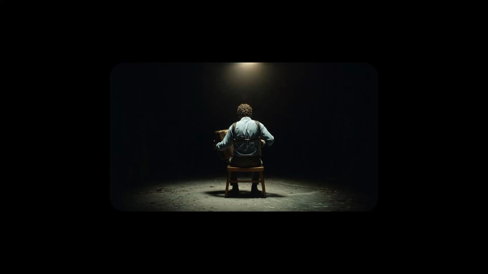
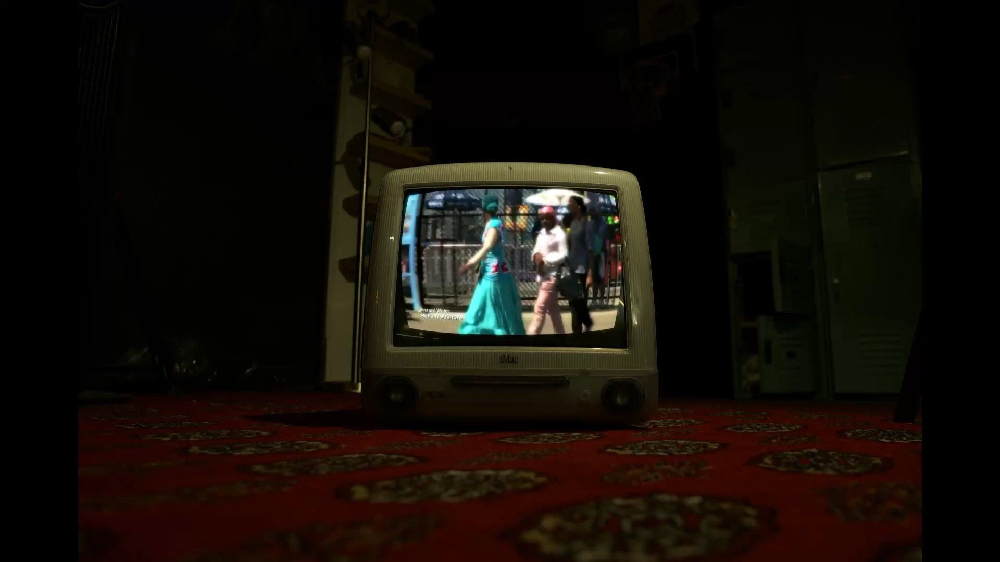
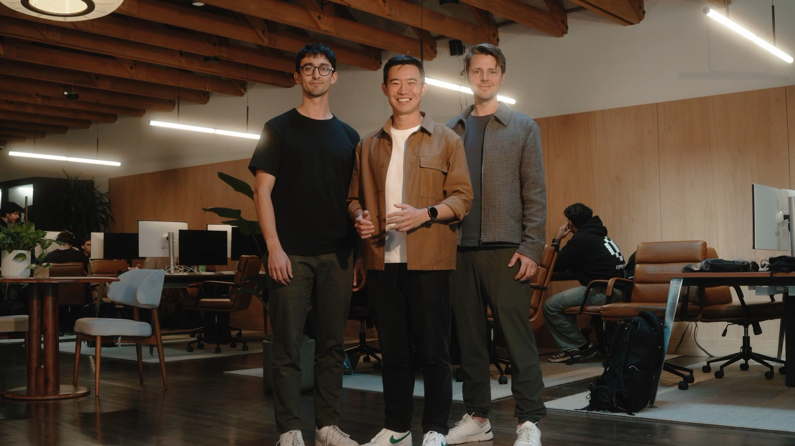
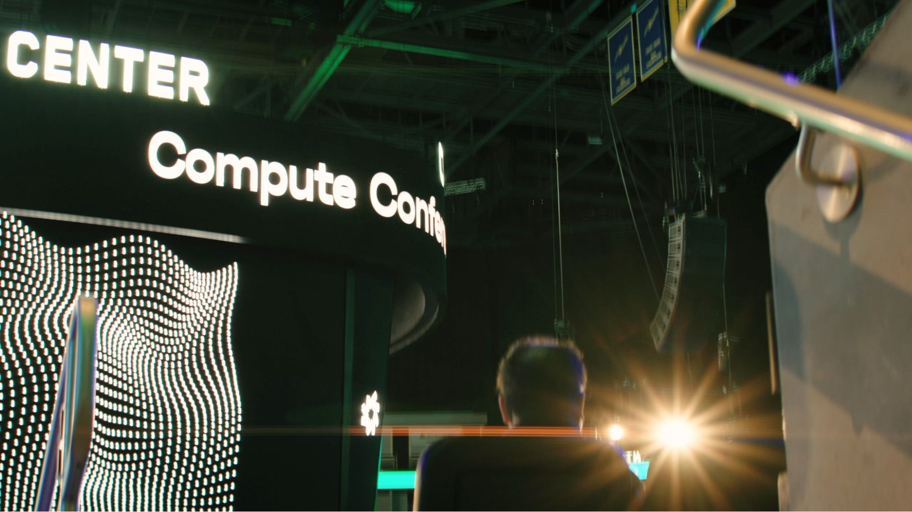
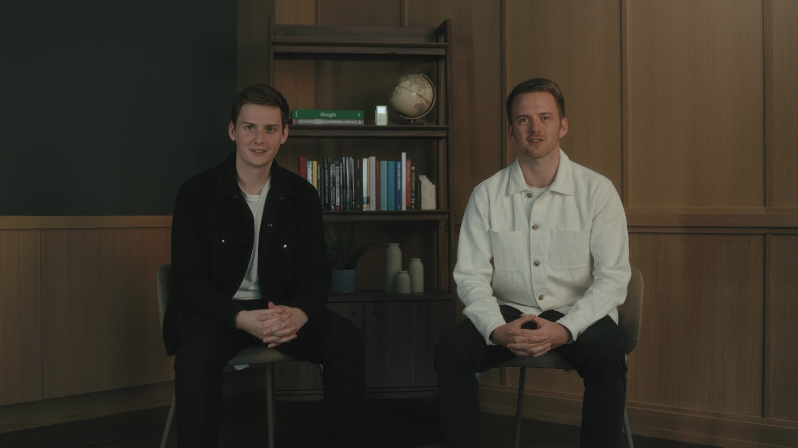
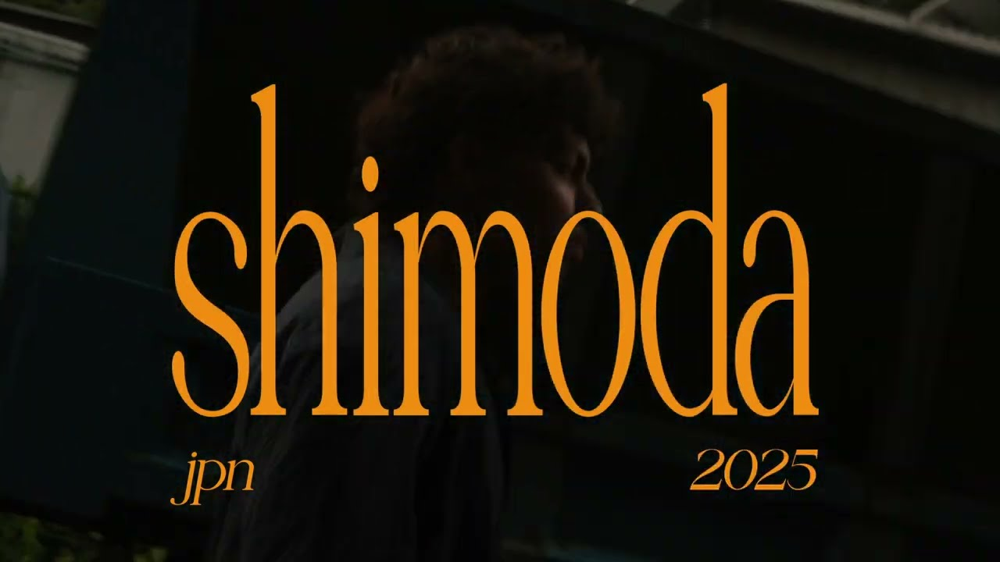
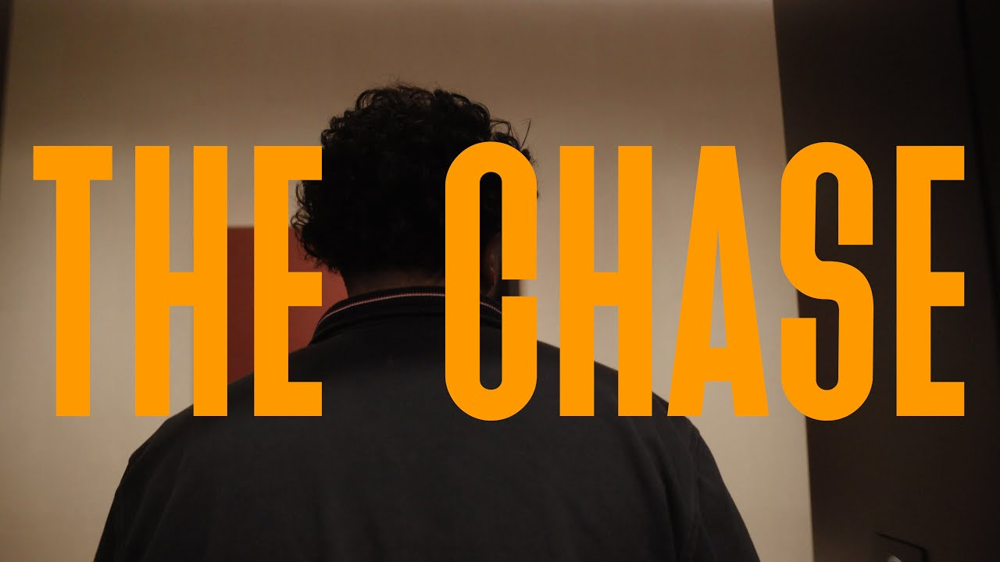
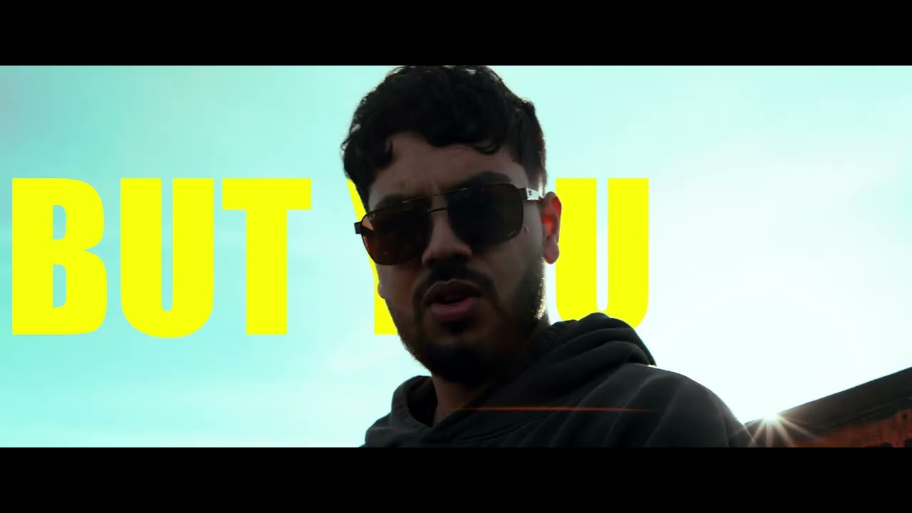
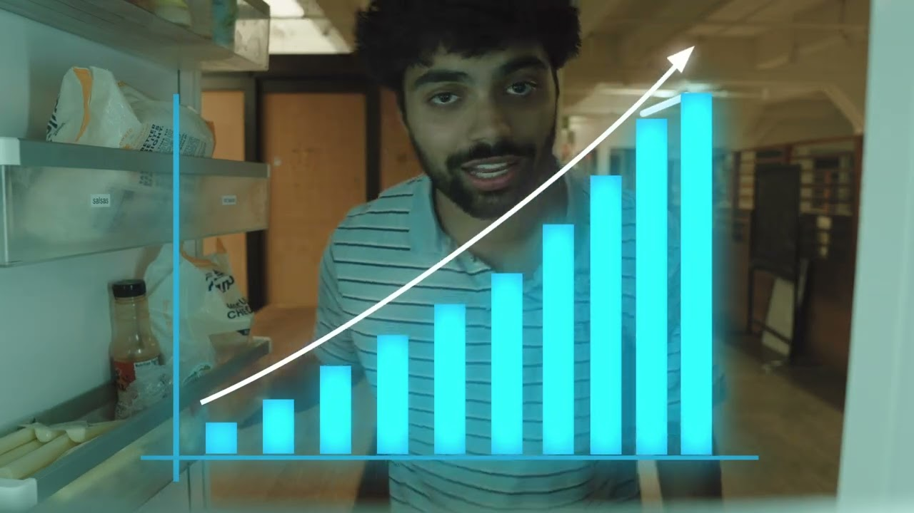
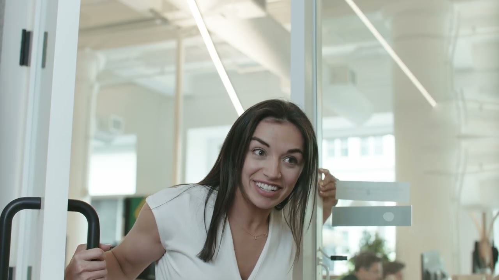

Watch filmAsimov
Launch film

Lore Launch film Play film 0:45Launch films, events, and personal work.

Watch filmLaunch film

Watch filmLaunch film

Watch filmEvent film

Watch filmLaunch film

Watch on YouTubePersonal film

Watch on YouTubeShort film

Watch filmFilm

Watch filmLaunch film

Watch filmLaunch film
The person behind the films
I direct, shoot, and edit films for startups and brands.
STAAS is my independent practice, based in San Francisco. My work spans launch films, short ads, events, and personal stories.
Selected commercial work was produced with Claybird.
Let’s talk about your film